El dibujo muestra una «casita» de vectores. Si el lado de la cuadrícula es de 1 cm, la suma de estos vectores tiene el valor de:
- A. 1 cm
- B. 2 cm
- C. 3 cm
- D. 4 cm
- E. 5 cm
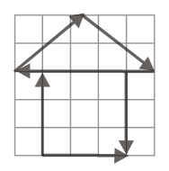
«Casita» de vectores en cuadrículaTopic: Newtonian Mechanics Metodi: Vector Decomposition, Superposition Principle Competenze: Diagrammatic Reasoning Objects: — Fonte: Testo (PDF) — p.2
Il disegno mostra una casetta di vettori. Se il lato della rete è di 1 cm, la somma di questi vettori ha il valore di:
- A. 1 cm
- B. 2 cm
- C. 3 cm
- D. 4 cm
- E. 5 cm
Cassita di vettori in rete
Topic: Newtonian Mechanics Metodi: Vector Decomposition, Superposition Principle Competenze: Diagrammatic Reasoning Objects: — Fonte: Testo (PDF) — p.2
The drawing shows a case of vectors. If the side of the grid is 1 cm, the sum of these vectors has the value of:
- A. 1 cm
- B. 2 cm
- C. 3 cm
- D. 4 cm
- E. 5 cm
The value of the input data shall be the sum of the values of the input data.
Topic: Newtonian Mechanics Metodi: Vector Decomposition, Superposition Principle Competenze: Diagrammatic Reasoning Objects: — Fonte: Testo (PDF) — p.2
Durante la primera hora el caracol Guttemberto avanza 64 centímetros. Durante la siguiente hora avanza otros 6,4 centímetros y durante la tercera hora 6,4 milímetros más, tras de lo cual se pone a dormir. La rapidez media del movimiento de Guttemberto es igual a:
- A. 71,04 km/h
- B. 64,64 m/s
- C. 23,68 m/h
- D. 23,68 cm/h
- E. 23,68 mm/h
Topic: Newtonian Mechanics Metodi: Kinematic Equations Competenze: Unit Conversion Objects: — Fonte: Testo (PDF) — p.2
Durante la prima ora lo scaracolo Guttemberto avanza 64 centimetri. Durante l’ora successiva si avanza altri 6,4 centimetri e durante la terza ora altri 6,4 millimetri, dopo di che si addormenta. La velocità media del movimento di Guttemberto è pari a:
- A. 71,04 km/h
- B. 64,64 m/s
- C. 23,68 m/h
- D. 23,68 cm/h
- E. 23,68 mm/h
Topic: Newtonian Mechanics Metodi: Kinematic Equations Competenze: Unit Conversion Objects: — Fonte: Testo (PDF) — p.2
During the first hour the Guttemberto snail advances 64 centimeters. During the next hour he advances another 6.4 centimeters and during the third hour another 6.4 millimeters, after which he falls asleep. The average speed of Guttemberto’s motion is equal to:
- A. 71,04 km/h
- B. 64,64 m/s
- C. 23,68 m/h
- D. 23,68 cm/h
- E. 23,68 mm/h
Topic: Newtonian Mechanics Metodi: Kinematic Equations Competenze: Unit Conversion Objects: — Fonte: Testo (PDF) — p.2
Una escalera eléctrica desciende con velocidad constante . Un estudiante que corre normalmente con velocidad baja avanzando por la escalera y tarda un tiempo de 30 segundos para recorrerla. Luego decide subir por la misma escalera en contravía (acción no recomendable) y tarda 60 segundos en llegar arriba. Respecto a los valores de estas velocidades se puede afirmar que:
- A.
- B.
- C.
- D.
- E.
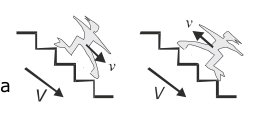
Escalera eléctrica con estudianteTopic: Newtonian Mechanics Metodi: Kinematic Equations Competenze: Physical Reasoning Objects: — Fonte: Testo (PDF) — p.2
Una scala elettrica scende a velocità costante . Uno studente che corre normalmente a velocità scende avanzando per la scala e ne impiega un tempo di 30 secondi per percorrerla. Poi decide di salire la stessa scala in contrasto (azione non consigliata) e ci vogliono 60 secondi per arrivare in cima. Per quanto riguarda i valori di queste velocità si può affermare che:
- A.
- B.
- C.
- D.
- E.
Scale elettrica con studente
Topic: Newtonian Mechanics Metodi: Kinematic Equations Competenze: Physical Reasoning Objects: — Fonte: Testo (PDF) — p.2
An electrical ladder descends at a constant speed . A student who normally runs at speed descends the ladder and takes 30 seconds to walk it. Then he decides to climb the same staircase in reverse (unrecommended action) and takes 60 seconds to get to the top. With regard to the values of these speeds, it can be stated that:
- A.
- B.
- C.
- D.
- E.
Electrical staircase with student
Topic: Newtonian Mechanics Metodi: Kinematic Equations Competenze: Physical Reasoning Objects: — Fonte: Testo (PDF) — p.2
El barómetro es un instrumento que se utiliza para medir:
- A. La densidad promedio de líquidos no miscibles.
- B. La humedad relativa de un lugar.
- C. La temperatura a la sombra de un lugar.
- D. La presión atmosférica.
- E. La potencia de la instalación eléctrica de una casa.
Topic: Fluid Mechanics Metodi: Hydrostatic Equilibrium Competenze: Physical Reasoning Objects: — Fonte: Testo (PDF) — p.2
Il barometro è uno strumento utilizzato per misurare:
- A. La densità media di liquidi non miscibili.
- B. L’umidità relativa di un luogo.
- C. La temperatura all’ombra di un luogo.
- D. Pressione atmosferica.
- E. La potenza dell’impianto elettrico di una casa.
Topic: Fluid Mechanics Metodi: Hydrostatic Equilibrium Competenze: Physical Reasoning Objects: — Fonte: Testo (PDF) — p.2
A barometer is an instrument used to measure:
- A. The average density of non-miscible liquids.
- B. The relative humidity of a place.
- C. The temperature in the shade of a place.
- **D ** The atmospheric pressure.
- E. The power of the electrical installation of a house.
Topic: Fluid Mechanics Metodi: Hydrostatic Equilibrium Competenze: Physical Reasoning Objects: — Fonte: Testo (PDF) — p.2
Sobre un cuerpo actúa una fuerza de 10 N y le causa una aceleración de 5 m/s². Si la misma fuerza actúa sobre un segundo cuerpo, le causa una aceleración de 10 m/s². ¿Si la fuerza se aplica sobre los dos cuerpos juntos qué aceleración obtendrán?
- A. 0,33 m/s²
- B. 3,3 m/s²
- C. 33 m/s²
- D. 5 m/s²
- E. 10 m/s²
Topic: Newtonian Mechanics Metodi: Free-Body Diagram, Kinematic Equations Competenze: Physical Reasoning Objects: — Fonte: Testo (PDF) — p.2
Su un corpo agisce una forza di 10 N e le provoca un’accelerazione di 5 m/s2. Se la stessa forza agisce su un secondo corpo, provoca un’accelerazione di 10 m/s2. Se la forza viene applicata sui due corpi insieme che accelerazione otterranno?
- A. 0,33 m/s²
- B. 3,3 m/s²
- C. 33 m/s²
- D. 5 m/s²
- E. 10 m/s²
Topic: Newtonian Mechanics Metodi: Free-Body Diagram, Kinematic Equations Competenze: Physical Reasoning Objects: — Fonte: Testo (PDF) — p.2
A force of 10 N acts on a body and causes it to accelerate by 5 m/s2. If the same force acts on a second body, it causes an acceleration of 10 m/s2. If the force is applied on the two bodies together what acceleration will they get?
- A. 0,33 m/s²
- B. 3,3 m/s²
- C. 33 m/s²
- D. 5 m/s²
- E. 10 m/s²
Topic: Newtonian Mechanics Metodi: Free-Body Diagram, Kinematic Equations Competenze: Physical Reasoning Objects: — Fonte: Testo (PDF) — p.2
La figura esquematiza el perfil ecuatorial de un planeta. Las rayas finas son algunos de los meridianos que convergen en un Polo. Teniendo en cuenta la anotación superior (que muestra la aceleración gravitacional en función de la distancia al centro del planeta), respecto a la comparación de los pesos de una esfera en la superficie, , en la cima de una montaña, , y en el fondo de un pozo, , se puede afirmar que:
- A.
- B.
- C.
- D.
- E.
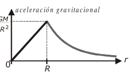
Gráfica aceleración gravitacional vs distancia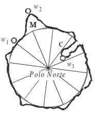
Perfil ecuatorial planeta con pesos w1 w2 w3Topic: Gravitation, Newtonian Mechanics Metodi: Newton’s Law of Gravitation, Physical Modeling Competenze: Physical Reasoning, Diagrammatic Reasoning Objects: Planet, Sphere Fonte: Testo (PDF) — p.3
La figura schematica il profilo equatoriale di un pianeta. Le linee sottili sono alcuni dei meridiani che convergono in un Polo. Considerando l’annotamento superiore (che mostra l’accelerazione gravitazionale in funzione della distanza dal centro del pianeta), per quanto riguarda il confronto dei pesi di una sfera sulla superficie, , sulla cima di una montagna, , e sul fondo di un pozzo, , si può affermare che:
- A.
- B.
- C.
- D.
- E.
Grafica accelerazione gravitazionale vs distanza
Profile equatoriale del pianeta con pesi w1 w2 w3
Topic: Gravitation, Newtonian Mechanics Metodi: Newton’s Law of Gravitation, Physical Modeling Competenze: Physical Reasoning, Diagrammatic Reasoning Objects: Planet, Sphere Fonte: Testo (PDF) — p.3
The figure outlines the equatorial profile of a planet. Fine stripes are some of the meridians that converge in a pole. Taking into account the above annotation (which shows the gravitational acceleration in relation to the distance to the centre of the planet), with respect to the comparison of the weights of a sphere on the surface, , on the top of a mountain, , and at the bottom of a well, , it can be stated that:
- A.
- B.
- C.
- D.
- E.
The following table shows the number of samples taken:
Equatorial profile of planet with weights w1 w2 w3
Topic: Gravitation, Newtonian Mechanics Metodi: Newton’s Law of Gravitation, Physical Modeling Competenze: Physical Reasoning, Diagrammatic Reasoning Objects: Planet, Sphere Fonte: Testo (PDF) — p.3
Desde el borde de una azotea se lanza verticalmente hacia abajo una esfera M con una rapidez de 30 m/s mientras simultáneamente se lanza hacia arriba otra esfera N igualmente con una rapidez de 30 m/s. No hay fricción con el aire. De las siguientes afirmaciones, la correcta es:
- A. Las dos esferas llegan al piso con iguales velocidades.
- B. N llega al piso con el doble de la velocidad con que llega M.
- C. Las dos esferas llegan simultáneamente al piso.
- D. Para llegar al piso la esfera N gasta doble tiempo que M.
- E. La esfera N llega al piso con velocidad de 30 m/s.
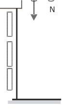
Esferas M y N lanzadas desde azoteaTopic: Newtonian Mechanics Metodi: Kinematic Equations, Conservation of Energy Competenze: Physical Reasoning Objects: Sphere, Projectile Fonte: Testo (PDF) — p.3
Dal bordo di un tetto si lancia verticalmente verso il basso una sfera M con una velocità di 30 m/s mentre simultaneamente si lancia verso l’alto un’altra sfera N con una velocità di 30 m/s. Non c’è friczione con l’aria. Dalle seguenti affermazioni, la corretta è:
- A. Le due sfere arrivano al pavimento con le stesse velocità.
- B. N arriva al pavimento a doppio della velocità con cui arriva M.
- C. Le due sfere arrivano al pavimento contemporaneamente.
- D. Per arrivare al pavimento la sfera N spende doppio tempo di M.
- E. La sfera N arriva al pavimento a velocità di 30 m/s.
Sfere M e N lanciate dal tetto
Topic: Newtonian Mechanics Metodi: Kinematic Equations, Conservation of Energy Competenze: Physical Reasoning Objects: Sphere, Projectile Fonte: Testo (PDF) — p.3
From the edge of a roof a sphere M is thrown vertically down at a speed of 30 m/s while another sphere N is simultaneously thrown up at a speed of 30 m/s. There’s no friction with the air. Of the following statements, the correct one is:
- A. Both spheres reach the floor at the same speed.
- B. N reaches the floor at twice the speed with which it reaches M.
- C. Both spheres reach the floor simultaneously.
- D. To get to the floor the N sphere takes twice as long as M.
- E. The N sphere reaches the floor at a speed of 30 m/s.
M and N spheres thrown from the roof
Topic: Newtonian Mechanics Metodi: Kinematic Equations, Conservation of Energy Competenze: Physical Reasoning Objects: Sphere, Projectile Fonte: Testo (PDF) — p.3
Se sabe que la presión que ejerce un fluido en un punto del fondo de un recipiente cumple la relación , en donde es la densidad del fluido, la aceleración gravitacional es y la profundidad del fluido como muestra la figura. También se sabe que al nivel del mar la presión atmosférica es de pascales y la densidad del aire es de 1 kg/m³. Si la densidad del aire fuera homogénea (en realidad disminuye con la altura) la altura de la capa de aire sería de:
- A. 1 km
- B. 10 km
- C. km
- D. km
- E. km
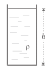
Recipiente con fluido y profundidad hTopic: Fluid Mechanics Metodi: Hydrostatic Equilibrium, Order-of-Magnitude Estimation Competenze: Estimation & Approximation Objects: Container Fonte: Testo (PDF) — p.3
La pressione esercitata da un fluido in un punto del fondo di un recipiente è nota per soddisfare il rapporto , dove è la densità del fluido, l’accelerazione gravitazionale è e la profondità del fluido come mostrato nella figura. Si sa anche che al livello del mare la pressione atmosferica è di pascal e la densità dell’aria è di 1 kg/m3. Se la densità dell’aria fosse omogenea (in realtà diminuisce con l’altezza) l’altezza della strata d’aria sarebbe di:
- A. 1 km
- B. 10 km
- C. km
- D. km
- E. km
Cantiere con fluido e profondità h
Topic: Fluid Mechanics Metodi: Hydrostatic Equilibrium, Order-of-Magnitude Estimation Competenze: Estimation & Approximation Objects: Container Fonte: Testo (PDF) — p.3
The pressure exerted by a fluid at a point on the bottom of a vessel is known to be where is the density of the fluid, the gravitational acceleration is and is the depth of the fluid as shown in the figure. It is also known that at sea level the atmospheric pressure is pascal and the air density is 1 kg/m3. If the density of air were homogeneous (actually decreases with height) the height of the air layer would be:
- A. 1 km
- B. 10 km
- C. km
- D. km
- E. km
Fluid and depth container h
Topic: Fluid Mechanics Metodi: Hydrostatic Equilibrium, Order-of-Magnitude Estimation Competenze: Estimation & Approximation Objects: Container Fonte: Testo (PDF) — p.3
La barra mostrada puede girar alrededor de su eje central y está en equilibrio. El número de bloques, iguales a cualquiera de los dos que cuelgan a la derecha, que contiene la bolsa es:
- A. 2
- B. 4
- C. 6
- D. 8
- E. 10
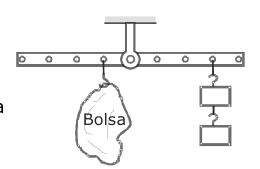
Barra con bolsa y bloques en equilibrioTopic: Rigid Body Statics Metodi: Torque & Angular Momentum Analysis, Free-Body Diagram Competenze: Diagrammatic Reasoning Objects: Lever, Block Fonte: Testo (PDF) — p.4
La barra mostrata può girare attorno al suo asse centrale ed è in equilibrio. Il numero di blocchi, uguale a uno dei due appesi a destra, che contiene la borsa è:
- A. 2
- B. 4
- C. 6
- D. 8
- E. 10
Barra con sacchetta e blocchi in equilibrio
Topic: Rigid Body Statics Metodi: Torque & Angular Momentum Analysis, Free-Body Diagram Competenze: Diagrammatic Reasoning Objects: Lever, Block Fonte: Testo (PDF) — p.4
The bar shown can rotate around its central axis and is in balance. The number of blocks, equal to either of the two hanging on the right, that the bag contains is:
- A. 2
- B. 4
- C. 6
- D. 8
- E. 10
Bar with bag and balanced blocks
Topic: Rigid Body Statics Metodi: Torque & Angular Momentum Analysis, Free-Body Diagram Competenze: Diagrammatic Reasoning Objects: Lever, Block Fonte: Testo (PDF) — p.4
Un carro que parte del reposo desciende sin fricción por un plano inclinado. Tomando el sistema coordenado mostrado en la figura, un estudiante graficó una de las cantidades involucradas en función del tiempo. Al estudiante se le olvidó escribir el nombre del eje vertical por lo cual el profesor le escribió la interrogación que aparece destacada en la gráfica. En el lugar de la interrogación el estudiante ha debido escribir:
- A. Distancia avanzada por el carro a lo largo del eje X.
- B. Velocidad del carro.
- C. Aceleración del carro.
- D. Distancia del carro al piso.
- E. Energía potencial gravitacional del carro.
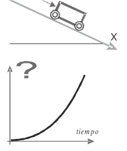
Gráfica cantidad vs tiempo, plano inclinadoTopic: Newtonian Mechanics, Conservation of Energy Metodi: Kinematic Equations, Free-Body Diagram Competenze: Physical Reasoning, Diagrammatic Reasoning Objects: Cart, Inclined Plane Fonte: Testo (PDF) — p.4
Un carro che parte dal riposo scende senza attrito su un piano inclinato. Prendendo il sistema di coordinate mostrato nella figura, uno studente ha graficato una delle quantità coinvolte in funzione del tempo. Lo studente dimenticò di scrivere il nome dell’asse verticale, per cui il professore gli scrisse la domanda che appare evidenziata sul grafico. Al posto dell’interrogatorio lo studente deve scrivere:
- A. Distanza avanzata per il carro lungo l’asse X.
- B. Velocità del veicolo.
- C. Accelerazione del carro.
- D. Distanza dal carro al pavimento.
- E. Energia potenziale gravitazionale del veicolo.
Grafica quantità vs tempo, piano inclinato
Topic: Newtonian Mechanics, Conservation of Energy Metodi: Kinematic Equations, Free-Body Diagram Competenze: Physical Reasoning, Diagrammatic Reasoning Objects: Cart, Inclined Plane Fonte: Testo (PDF) — p.4
A carriage that leaves resting descends without friction on a sloping plane. Taking the coordinate system shown in the figure, a student graphed one of the amounts involved in relation to time. The student forgot to write the name of the vertical axis, so the teacher wrote the question that appears prominently on the graph. In the place of questioning the student must write:
- A. The distance advanced by the car along the X-axis.
- B. Speed of the car.
- C. Acceleration of the car.
- D. Distance from the car to the floor.
- E. The potential gravitational energy of the car.
Graphic quantity vs time, sloping plane
Topic: Newtonian Mechanics, Conservation of Energy Metodi: Kinematic Equations, Free-Body Diagram Competenze: Physical Reasoning, Diagrammatic Reasoning Objects: Cart, Inclined Plane Fonte: Testo (PDF) — p.4
Un avión de 10000 kg de masa aterriza con una velocidad de 360 km/h y se detiene mediante la acción de sus frenos y de un paracaídas como insinúa la figura. Si al paracaídas se debe el 80% del trabajo de frenado, el trabajo debido a las fuerzas originadas por los frenos vale:
- A. 500 J
- B. 1,8×10⁴ J
- C. 3,6×10⁴ J
- D. 10⁷ J
- E. 10⁸ J
Topic: Newtonian Mechanics, Conservation of Energy Metodi: Energy Conservation Method, Kinematic Equations Competenze: Physical Reasoning Objects: — Fonte: Testo (PDF) — p.4
Un aereo di 10000 kg di massa atterra a una velocità di 360 km/h e si ferma con l’azione dei suoi freni e di un paracadute come indica la figura. Se l’80% del lavoro di frenatura è dovuto al paracadute, il lavoro dovuto alle forze dei freni vale:
- A. 500 J
- B. 1,8×10⁴ J
- C. 3,6×10⁴ J
- D. 10⁷ J
- E. 10⁸ J
Topic: Newtonian Mechanics, Conservation of Energy Metodi: Energy Conservation Method, Kinematic Equations Competenze: Physical Reasoning Objects: — Fonte: Testo (PDF) — p.4
A 10000 kg aircraft lands at a speed of 360 km/h and is stopped by the action of its brakes and a parachute as indicated in the figure. If 80% of the braking work is due to the parachute, the braking force work is:
- A. 500 J
- B. 1,8×10⁴ J
- C. 3,6×10⁴ J
- D. 10⁷ J
- E. 10⁸ J
Topic: Newtonian Mechanics, Conservation of Energy Metodi: Energy Conservation Method, Kinematic Equations Competenze: Physical Reasoning Objects: — Fonte: Testo (PDF) — p.4
Un carro de juguete de masa 3 kg que viaja rectilíneamente con velocidad constante de 10 m/s choca frontalmente con otro carro de 2 kg de masa que viaja con una velocidad como muestra la figura. A consecuencia de la colisión los carros quedan pegados y con velocidad CERO. De esto se deduce que la velocidad vale:
- A. 10 m/s
- B. 15 m/s
- C. 20 m/s
- D. 25 m/s
- E. 30 m/s
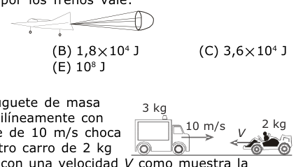
Dos carros de 3 kg y 2 kg en colisiónTopic: Conservation of Momentum Metodi: Conservation of Momentum, Impulse-Momentum Theorem Competenze: Physical Reasoning Objects: Cart Fonte: Testo (PDF) — p.4
Un carro giocattolo di massa di 3 kg che viaggia rettinamente a velocità costante di 10 m/s colpisce frontalmente un altro carro di massa di 2 kg che viaggia a velocità come mostra la figura. Come conseguenza del collasso le auto rimangono attaccate e a velocità ZERO. Da questo si deduce che la velocità vale:
- A. 10 m/s
- B. 15 m/s
- C. 20 m/s
- D. 25 m/s
- E. 30 m/s
Due carrozzine di 3 kg e 2 kg in collisione
Topic: Conservation of Momentum Metodi: Conservation of Momentum, Impulse-Momentum Theorem Competenze: Physical Reasoning Objects: Cart Fonte: Testo (PDF) — p.4
A 3 kg mass toy wagon travelling straight at a constant speed of 10 m/s collides frontally with another 2 kg mass wagon travelling at a speed as shown in the figure. As a result of the collision the cars get stuck and at zero speed. The speed is therefore:
- A. 10 m/s
- B. 15 m/s
- C. 20 m/s
- D. 25 m/s
- E. 30 m/s
Two 3 kg and 2 kg wagons in collision
Topic: Conservation of Momentum Metodi: Conservation of Momentum, Impulse-Momentum Theorem Competenze: Physical Reasoning Objects: Cart Fonte: Testo (PDF) — p.4
Un bulbo (tubo cerrado por sus extremos) de vidrio de paredes delgadas como el ilustrado en la figura, y lastrado con perdigones de un metal muy denso, se puede utilizar, calibrado adecuadamente, como densímetro de líquidos. De las siguientes afirmaciones acerca de este aparato, la correcta es:
- A. Para que el densímetro funcione no debe contener aire en su interior sino estar vacío.
- B. La máxima densidad medible es la del agua, 1 g/cm³.
- C. La densidad CERO corresponde a la mitad de la escala, es decir la de la raya M.
- D. La densidad correspondiente a la raya N es menor que la de la raya M.
- E. Las densidades correspondientes a las rayas N y P son iguales.
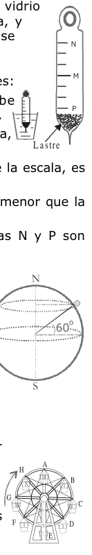
Densímetro de bulbo con marcas N M PTopic: Fluid Mechanics Metodi: Hydrostatic Equilibrium, Physical Modeling Competenze: Physical Reasoning, Diagrammatic Reasoning Objects: — Fonte: Testo (PDF) — p.5
Un bulbo di vetro (tubo chiuso per le estremità) di pareti sottili come quello illustrato nella figura, e strato con perdigoni di un metallo molto denso, può essere utilizzato, adeguatamente calibrato, come densimetro di liquidi. Delle seguenti affermazioni su questo apparecchio, la corretta è:
- A. Per funzionare il densimetro non deve contenere aria all’interno ma deve essere vuoto.
- B. La densità massima misurabile è quella dell’acqua, 1 g/cm3.
- C. La densità zero corrisponde alla metà della scala, cioè quella della linea M.
- D. La densità corrispondente alla riga N è inferiore a quella della riga M.
- E. Le densità corrispondenti alle strisce N e P sono uguali.
Densitario di bulbo con marcature N M P
Topic: Fluid Mechanics Metodi: Hydrostatic Equilibrium, Physical Modeling Competenze: Physical Reasoning, Diagrammatic Reasoning Objects: — Fonte: Testo (PDF) — p.5
A glass bulb (tube closed by its ends) with thin walls such as the one shown in the figure, and lastered with perdigons of a very dense metal, can be used, calibrated appropriately, as a densimeter of liquids. Of the following statements about this device, the correct one is:
- A. For the densimeter to work it must not contain air inside but be empty.
- B. The maximum measurable density is that of water, 1 g/cm3.
- C. The zero density corresponds to half the scale, i.e. the M-line.
- D. The density corresponding to the N-line is less than that of the M-line.
- E. The densities corresponding to the N and P stripes are the same.
Bulb density with markings N M P
Topic: Fluid Mechanics Metodi: Hydrostatic Equilibrium, Physical Modeling Competenze: Physical Reasoning, Diagrammatic Reasoning Objects: — Fonte: Testo (PDF) — p.5
Se sabe que debido a la rotación de la Tierra sobre sí misma la velocidad tangencial de un cuerpo situado en el Ecuador es de 1670 km/h. La velocidad tangencial de un punto situado en la superficie de la Tierra sobre la circunferencia del paralelo 60°, como el mostrado en la figura, vale:
- A. 1670 km/h
- B. 835 km/h
- C. 1436 km/h
- D. 3340 km/h
- E. Datos insuficientes, no se puede determinar
Topic: Newtonian Mechanics, Rotational Dynamics Metodi: Kinematic Equations, Physical Modeling Competenze: Physical Reasoning Objects: Planet Fonte: Testo (PDF) — p.5
Si sa che a causa della rotazione della Terra su se stessa la velocità tangenziale di un corpo situato nell’Ecuatore è di 1670 km/h. La velocità tangenziale di un punto situato sulla superficie terrestre sulla circonferenza del parallelo 60°, come mostrato nella figura, vale:
- A. 1670 km/h
- B. 835 km/h
- C. 1436 km/h
- D. 3340 km/h
- E. Non sono sufficienti i dati, non è possibile determinare
Topic: Newtonian Mechanics, Rotational Dynamics Metodi: Kinematic Equations, Physical Modeling Competenze: Physical Reasoning Objects: Planet Fonte: Testo (PDF) — p.5
It is known that because of the rotation of the Earth over itself the tangential velocity of a body located in the Equator is 1670 km/h. The tangential velocity of a point on the Earth’s surface above the circumference of the parallel 60°, as shown in Figure 1, is:
- A. 1670 km/h
- B. 835 km/h
- C. 1436 km/h
- D. 3340 km/h
- E. Data insufficient, cannot be determined
Topic: Newtonian Mechanics, Rotational Dynamics Metodi: Kinematic Equations, Physical Modeling Competenze: Physical Reasoning Objects: Planet Fonte: Testo (PDF) — p.5
La figura muestra una rueda atracción de un parque con 8 góndolas que giran uniformemente con rapidez angular constante como se indica. De las siguientes afirmaciones acerca de las energías cinéticas o potenciales de las góndolas, la correcta es:
- A. En el instante mostrado en la figura la energía potencial de las 8 góndolas vale . Cuando la góndola que está en H pase a ocupar la posición A, la energía potencial de las 8 góndolas será mayor que .
- B. Después de un giro completo la energía cinética de cada góndola aumenta en una cantidad constante.
- C. La energía cinética de la góndola que está en la posición A es mayor que la que está en E.
- D. La energía cinética de cada góndola permanece constante en todo momento.
- E. La energía potencial de cada góndola aumenta mientras va de la posición A a la E y disminuye mientras va de la posición E a la A.
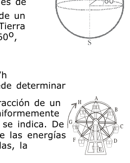
Rueda de parque con 8 góndolas A–HTopic: Conservation of Energy, Rotational Dynamics Metodi: Energy Conservation Method, Physical Modeling Competenze: Physical Reasoning, Diagrammatic Reasoning Objects: Wheel Fonte: Testo (PDF) — p.5
La figura mostra una ruota di attrazione di un parco con 8 gommose che ruotano uniformemente con velocità angolare costante come indicato. Delle seguenti affermazioni sulle energie cinetiche o potenziali delle gondola, la corretta è:
- A. L’istante indicato nella figura l’energia potenziale delle 8 gommage è . Quando la gomma che è in H passa a occupare la posizione A, l’energia potenziale delle 8 gomme sarà superiore a .
- B. Dopo un giro completo l’energia cinetica di ogni gomma aumenta in quantità costante.
- C. L’energia cinetica della gondola che è in posizione A è maggiore di quella che è in E.
- D. L’energia cinetica di ogni gondola rimane costante in ogni momento.
- E. L’energia potenziale di ogni gomma aumenta mentre va dalla posizione A a E e diminuisce mentre va dalla posizione E a A.
Rota di parco con 8 gommose AH
Topic: Conservation of Energy, Rotational Dynamics Metodi: Energy Conservation Method, Physical Modeling Competenze: Physical Reasoning, Diagrammatic Reasoning Objects: Wheel Fonte: Testo (PDF) — p.5
The figure shows a park wheel with 8 gondolas rotating uniformly at constant angular speed as indicated. Of the following statements about the kinetic or potential energies of gondolas, the correct one is:
- A. In the instant shown in the figure the potential energy of the 8 gondolas is . When the gondola in H passes to position A, the potential energy of the 8 gondolas will be greater than .
- B. After a complete turn the kinetic energy of each gondola increases by a constant amount.
- C. The kinetic energy of the gondola at position A is greater than that at position E. The kinetic energy of each gondola remains constant at all times.
- E. The potential energy of each gondola increases as it goes from position A to E and decreases as it goes from position E to A.
*A8 wheel with AH *
Topic: Conservation of Energy, Rotational Dynamics Metodi: Energy Conservation Method, Physical Modeling Competenze: Physical Reasoning, Diagrammatic Reasoning Objects: Wheel Fonte: Testo (PDF) — p.5
Juanito, cuya masa es de 60 kg, se divierte en una rueda mecánica giratoria de un parque. En la figura se muestran algunas de las dimensiones observables. La tensión de la cuerda que soporta a Juanito vale:
(PISTA: No todas las dimensiones son necesarias para resolver el problema)
- A. 60 N
- B. 100 N
- C. 600 N
- D. 1200 N
- E. 6000 N
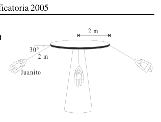
Rueda mecánica con Juanito, 30°, 2 mTopic: Newtonian Mechanics, Rotational Dynamics Metodi: Free-Body Diagram, Torque & Angular Momentum Analysis Competenze: Physical Reasoning, Diagrammatic Reasoning Objects: Wheel, String Fonte: Testo (PDF) — p.6
Juanito, che pesa 60 kg, si diverte su una ruota meccanica rotante di un parco. La figura mostra alcune delle dimensioni osservabili. La tensione della corda che supporta Juanito vale:
(INTRODUZIONE: Non tutte le dimensioni sono necessarie per risolvere il problema)
- A. 60 N
- B. 100 N
- C. 600 N
- D. 1200 N
- E. 6000 N
Ruota meccanica con Juanito, 30°, 2 m
Topic: Newtonian Mechanics, Rotational Dynamics Metodi: Free-Body Diagram, Torque & Angular Momentum Analysis Competenze: Physical Reasoning, Diagrammatic Reasoning Objects: Wheel, String Fonte: Testo (PDF) — p.6
Juanito, who weighs 60 kg, is having fun on a rotating mechanical wheel in a park. The figure shows some of the observable dimensions. The tension of the rope that holds Juanito is:
(Hint: Not all dimensions are necessary to solve the problem)
- A. 60 N
- B. 100 N
- C. 600 N
- D. 1200 N
- E. 6000 N
Mechanical wheel with Juanito, 2 m
Topic: Newtonian Mechanics, Rotational Dynamics Metodi: Free-Body Diagram, Torque & Angular Momentum Analysis Competenze: Physical Reasoning, Diagrammatic Reasoning Objects: Wheel, String Fonte: Testo (PDF) — p.6
Una persona empuja una nevera que avanza resbalando sobre el piso. De las siguientes, la figura que muestra adecuadamente las direcciones de las fuerzas de fricción que el piso aplica sobre los pies de la persona y sobre la nevera, es:
- A. …
- B. …
- C. …
- D. …
- E. No se puede determinar sin saber la relación de masas entre la persona y la nevera.
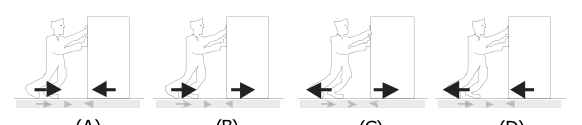
Diagramas de fuerzas de fricción A–DTopic: Newtonian Mechanics Metodi: Free-Body Diagram, Physical Modeling Competenze: Diagrammatic Reasoning, Physical Reasoning Objects: — Fonte: Testo (PDF) — p.6
Una persona spinge un frigorifero che scivola sul pavimento. Tra le seguenti, la figura che indica adeguatamente le direzioni delle forze di attrito che il pavimento applica sui piedi della persona e sul frigorifero è:
- A. …
- B. …
- C. …
- D. …
- E. Non si può determinare senza sapere il rapporto di massa tra la persona e il frigorifero.
Grafici delle forze di frizione AD
Topic: Newtonian Mechanics Metodi: Free-Body Diagram, Physical Modeling Competenze: Diagrammatic Reasoning, Physical Reasoning Objects: — Fonte: Testo (PDF) — p.6
A person pushes a refrigerator that slides over the floor. Of the following, the figure showing the direction of the frictional forces applied by the floor on the person’s feet and on the refrigerator is:
- A. …
- B. …
- C. …
- D. …
- E. The mass ratio between the person and the refrigerator cannot be determined without knowing.
The following shall be added to the list of the following:
Topic: Newtonian Mechanics Metodi: Free-Body Diagram, Physical Modeling Competenze: Diagrammatic Reasoning, Physical Reasoning Objects: — Fonte: Testo (PDF) — p.6
La tabla siguiente muestra la masa y el volumen de tres líquidos que no se mezclan entre sí (no miscibles).
| Líquido | Masa | Volumen |
|---|---|---|
| 1 | 5 kg | 0,005 m³ |
| 2 | 300 g | 0,6 litros |
| 3 | 6 kg | 4000 cm³ |
Si volúmenes iguales de estos líquidos se vierten en un recipiente cilíndrico, se colocarán como muestra la figura:
- A. …
- B. …
- C. …
- D. …
- E. …
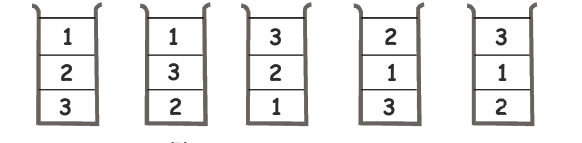
Disposición capas de tres líquidos A–ETopic: Fluid Mechanics Metodi: Hydrostatic Equilibrium, Physical Modeling Competenze: Physical Reasoning, Mathematical Modeling Objects: Container Fonte: Testo (PDF) — p.6
La tabella seguente mostra la massa e il volume di tre liquidi non miscelati (non miscibili).
Liquidity # Mass # Volume
|---------|------|---------| | 1 | 5 kg | 0,005 m³ | ∙ 2 ∙ 300 g ∙ 0.6 litri ∙ ∙ ∙ ∙ ∙ ∙ ∙ ∙ ∙ ∙ ∙ ∙ ∙ ∙ ∙ ∙ ∙ ∙ ∙ ∙ ∙ ∙ ∙ ∙ ∙ ∙ ∙ ∙ ∙ ∙ ∙ ∙ ∙ ∙ ∙ ∙ ∙ ∙ ∙ ∙
Se si versano volumi uguali di questi liquidi in un recipiente cilindrico, si collocano come mostrato nella figura seguente:
- A. …
- B. …
- C. …
- D. …
- E. …
Disposizione di tre strati di liquidi AE
Topic: Fluid Mechanics Metodi: Hydrostatic Equilibrium, Physical Modeling Competenze: Physical Reasoning, Mathematical Modeling Objects: Container Fonte: Testo (PDF) — p.6
The following table shows the mass and volume of three non-mixing (non-miscible) liquids.
♪ Liquid ♪ Mass ♪ Volume ♪ |---------|------|---------| | 1 | 5 kg | 0,005 m³ | ♪ two, three hundred g, six gallons ♪ ♪ I’m going to be a big fan ♪
If equal volumes of these liquids are poured into a cylindrical container, they shall be placed as shown in the figure:
- A. …
- B. …
- C. …
- D. …
- E. …
The following table shows the results of the test:
Topic: Fluid Mechanics Metodi: Hydrostatic Equilibrium, Physical Modeling Competenze: Physical Reasoning, Mathematical Modeling Objects: Container Fonte: Testo (PDF) — p.6
Un profesor de física propuso a sus estudiantes un problema en el que preguntaba por el valor de la velocidad de lanzamiento de un cuerpo que alcanza una altura mientras avanza una longitud . Además se conoce la aceleración gravitacional . Los estudiantes dieron las respuestas que aparecen a continuación. La que necesariamente no puede ser correcta pues no corresponde a unidades de velocidad es:
- A.
- B.
- C.
- D.
- E.
Topic: Newtonian Mechanics Metodi: Dimensional Analysis Competenze: Physical Reasoning, Unit Conversion Objects: — Fonte: Testo (PDF) — p.7
Un professore di fisica ha proposto ai suoi studenti un problema in cui chiedeva il valore della velocità di lancio di un corpo che raggiunge un’altezza mentre avanza una lunghezza . Inoltre è conosciuta l’accelerazione gravitazionale . Gli studenti hanno dato le risposte riportate di seguito. La corretta non può essere necessariamente corretta, poiché non corrisponde a unità di velocità è:
- A.
- B.
- C.
- D.
- E.
Topic: Newtonian Mechanics Metodi: Dimensional Analysis Competenze: Physical Reasoning, Unit Conversion Objects: — Fonte: Testo (PDF) — p.7
A physics professor proposed a problem to his students in which he asked for the value of the launch velocity of a body that reaches a height while advancing a length . Also known is gravitational acceleration . The students gave the answers below. The one that can’t necessarily be correct because it doesn’t correspond to speed units is:
- A.
- B.
- C.
- D.
- E.
Topic: Newtonian Mechanics Metodi: Dimensional Analysis Competenze: Physical Reasoning, Unit Conversion Objects: — Fonte: Testo (PDF) — p.7
Un cilindro cerrado que contiene hidrógeno se divide en dos compartimientos desiguales por medio de un pistón móvil que en el equilibrio toma la posición mostrada en la figura. La temperatura es la misma en los dos recipientes. De las siguientes afirmaciones la correcta es:
- A. Los dos compartimientos contienen igual número de moles.
- B. La energía cinética promedio por molécula es mayor en el recipiente 2 que en el 1.
- C. La masa de una molécula del recipiente 2 es el doble que la masa de una molécula en el recipiente 1.
- D. Las presiones en los dos recipientes son iguales.
- E. El número de átomos en los dos recipientes son iguales.
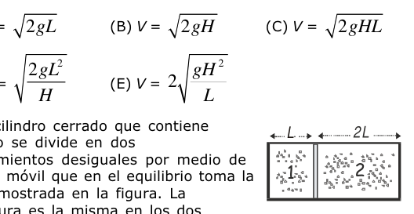
Cilindro con pistón móvil, dos compartimentosTopic: Thermodynamics, Kinetic Theory Metodi: Ideal Gas Law, Kinetic Theory of Gases Competenze: Physical Reasoning Objects: Gas, Cylinder, Piston Fonte: Testo (PDF) — p.7
Un cilindro chiuso contenente idrogeno viene diviso in due compartidi non uguali tramite un pistone mobile che nell’equilibrio prende la posizione mostrata nella figura. La temperatura è la stessa in entrambi i recipienti. Tra le seguenti affermazioni, la corretta è:
- A. I due comparti contengono uguali molli.
- B. La media di energia cinetica per molecola è maggiore nel recipiente 2 che nel recipiente 1.
- C. La massa di una molecola del recipiente 2 è doppia rispetto alla massa di una molecola nel recipiente 1.
- D. Le pressioni in entrambi i recipienti sono uguali.
- E. Il numero di atomi nei due recipienti è uguale.
Cilindro con pistone mobile, due comparti
Topic: Thermodynamics, Kinetic Theory Metodi: Ideal Gas Law, Kinetic Theory of Gases Competenze: Physical Reasoning Objects: Gas, Cylinder, Piston Fonte: Testo (PDF) — p.7
A closed cylinder containing hydrogen is divided into two uneven compartments by means of a moving piston that in equilibrium takes the position shown in the figure. The temperature is the same in both containers. Of the following statements, the correct one is:
- A. Both compartments contain the same number of moles.
- B. The average kinetic energy per molecule is higher in container 2 than in container 1.
- C. The mass of a molecule in container 2 is twice the mass of a molecule in container 1.
- D. The pressures in the two containers are the same.
- E. The number of atoms in the two containers is the same.
Cylinder with a moving piston, two compartments
Topic: Thermodynamics, Kinetic Theory Metodi: Ideal Gas Law, Kinetic Theory of Gases Competenze: Physical Reasoning Objects: Gas, Cylinder, Piston Fonte: Testo (PDF) — p.7